Metodologia Jurídica · aula-01
As escolas jurídicas na Idade Média
11,915 words, more than two sittings · 6 chapters · 29 figures, 29 saying what they do · 32 quoted sources · no quiz
built on1.2
on29/09
byCodex
generation1 Everglades
commits58
how it's built
- 1Antes dos códigos, um direito feito por juristas2,621 w
- 2A autoridade do texto faz nascer uma escola1,726 w
- 3A cidade entra no comentário1,403 w
- 4Como a interpretação encontra argumentos3,564 w
- 5Quando o texto muda de lugar2,399 w
- 6Questão de prova201 w
its figures
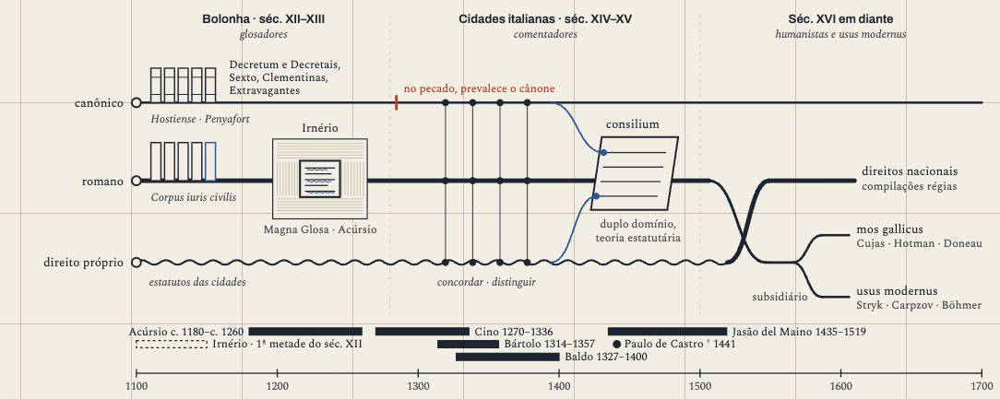
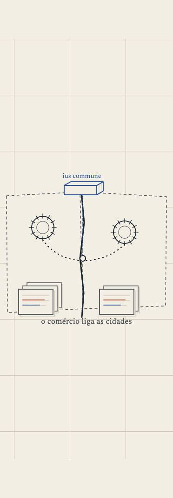
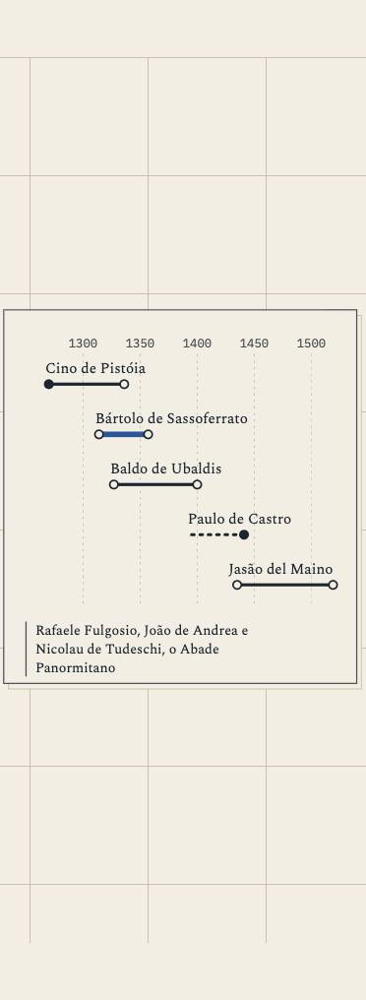
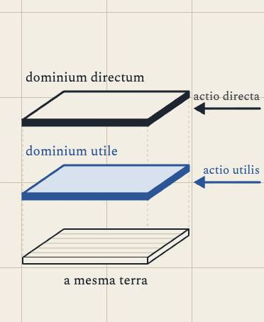
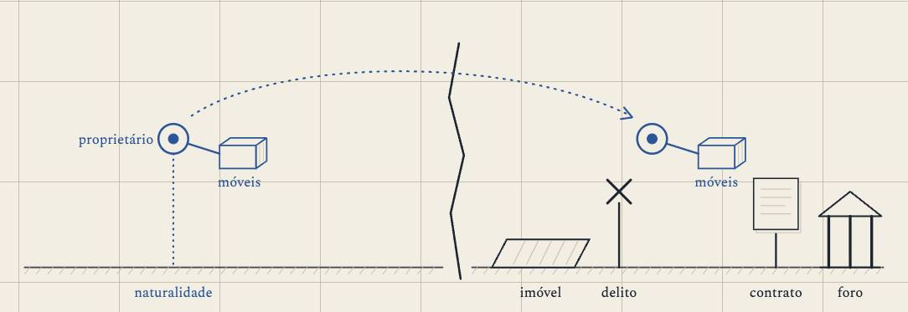
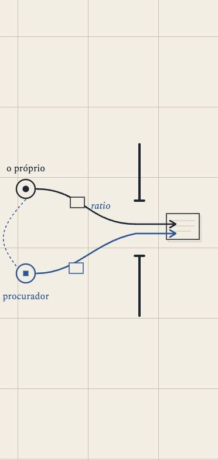
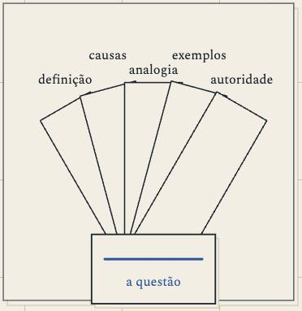
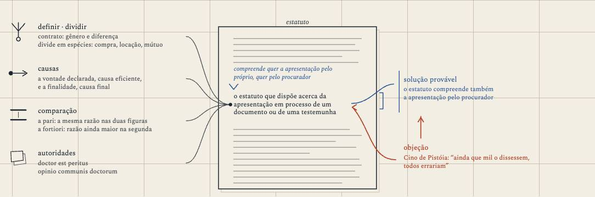
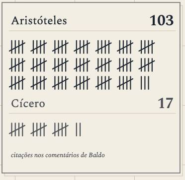
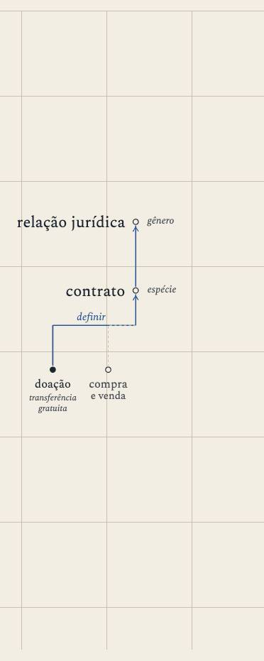
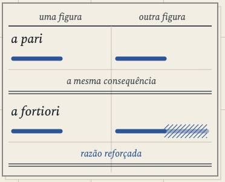
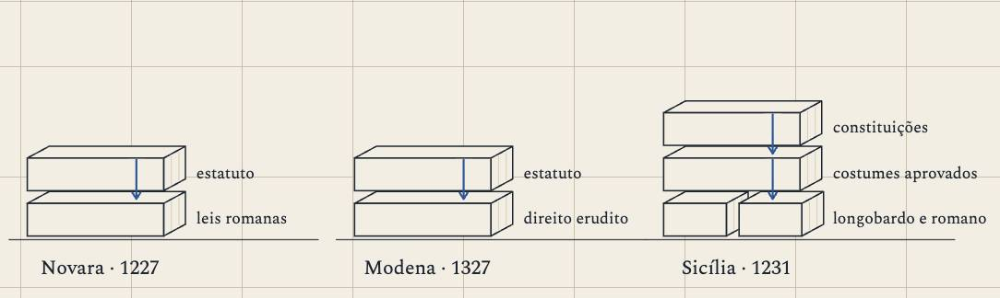
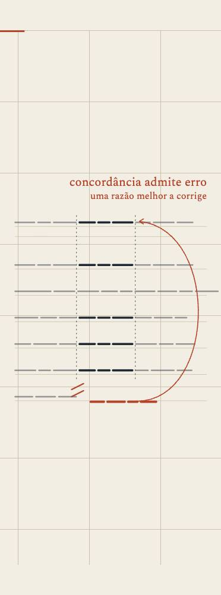
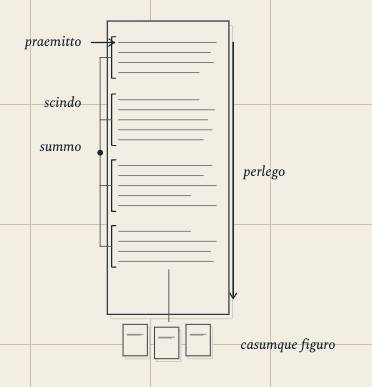
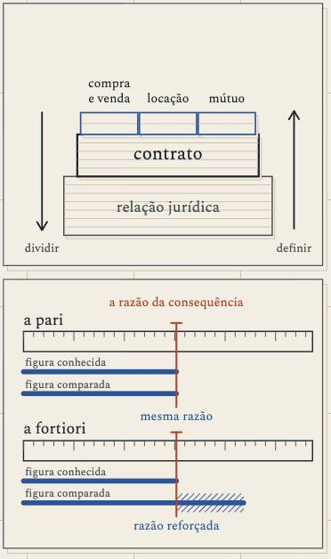
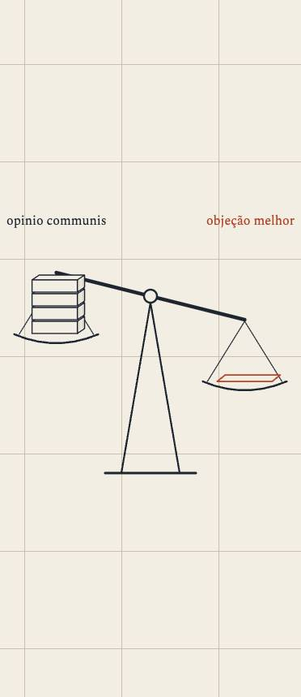
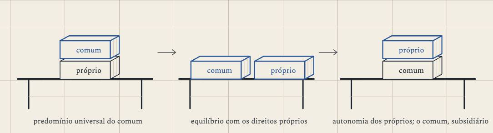
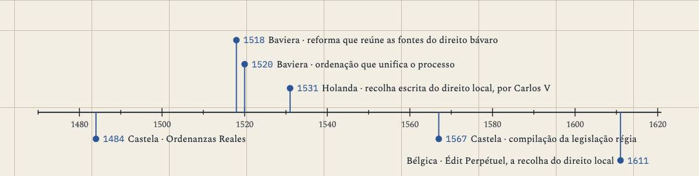
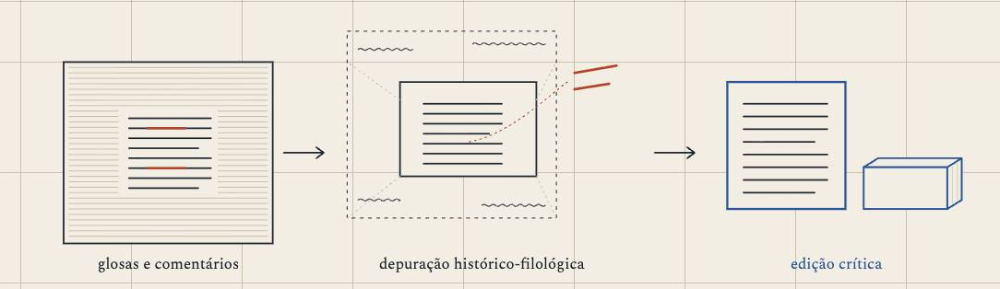
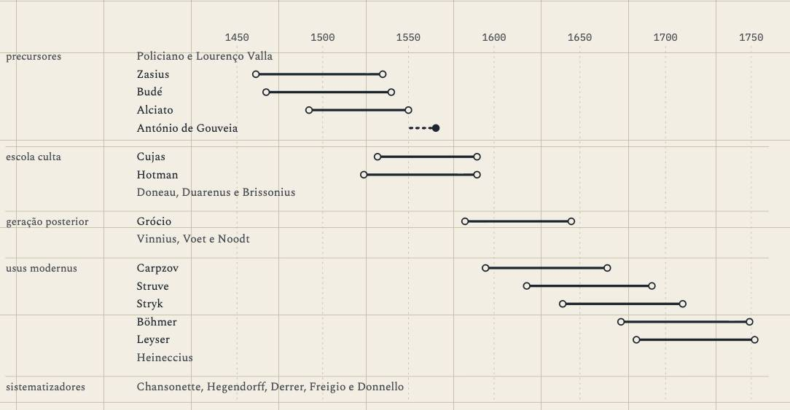
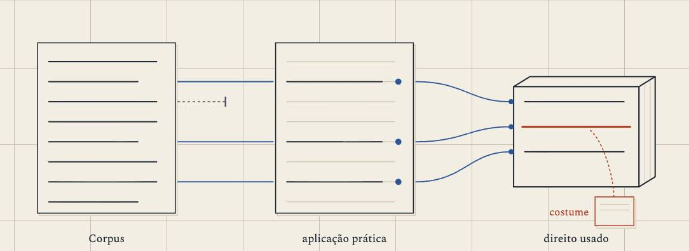
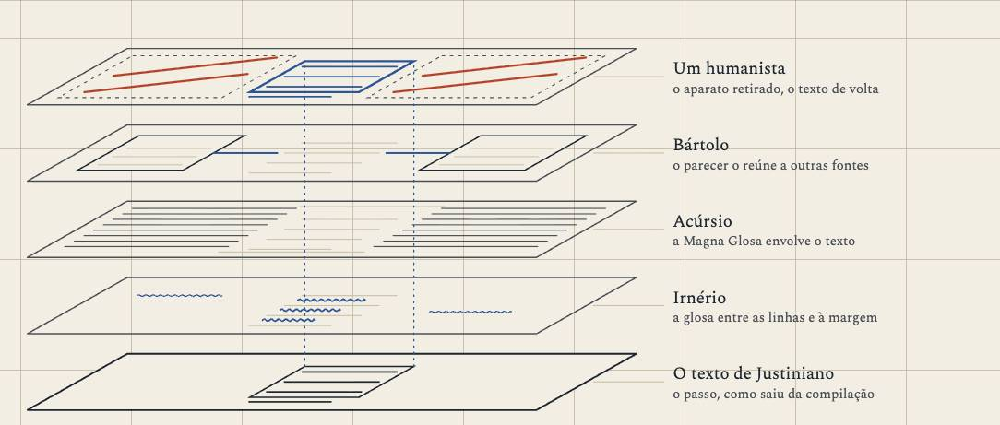
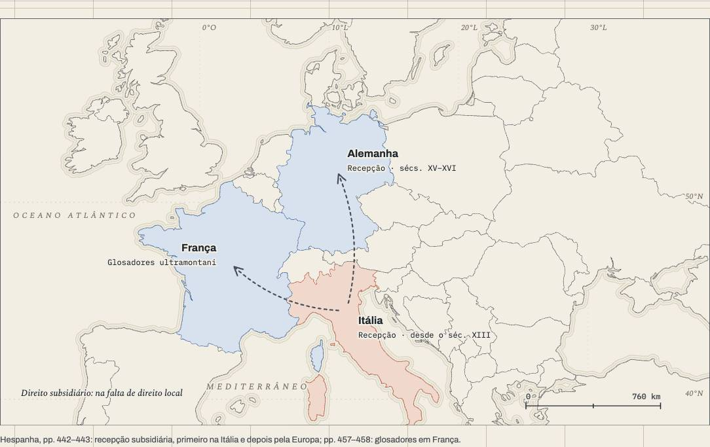
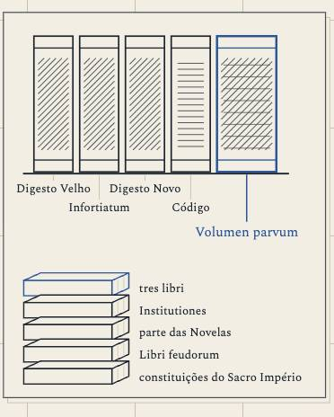
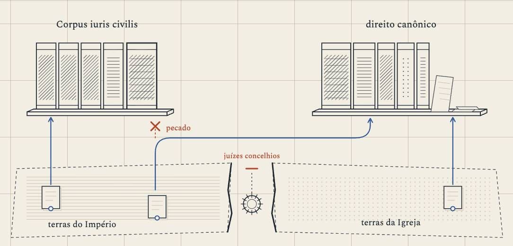
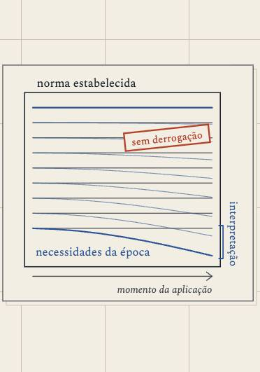
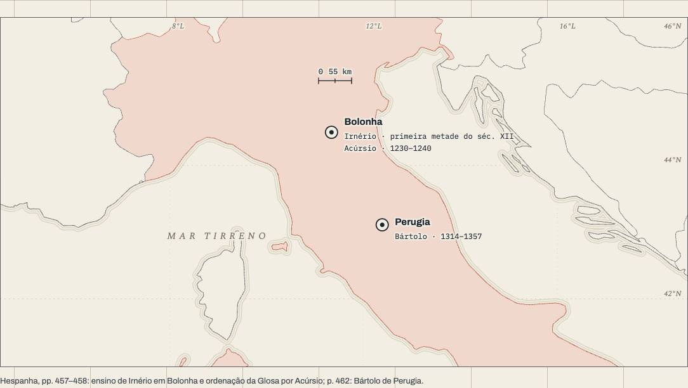
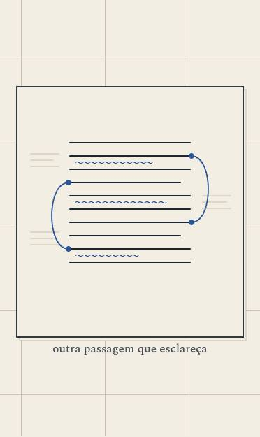
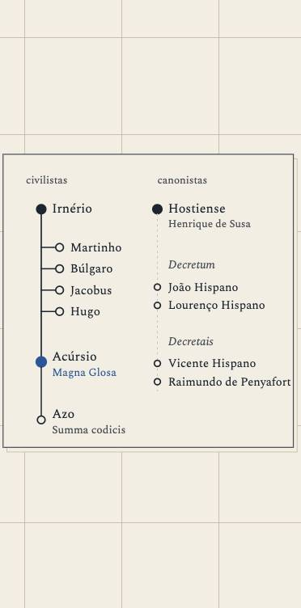
what it quotes
- 32×source
the course, as I read it
A reading course that reads well, with four lessons missing.
its checks
negated inference 1.1 / 0.5
gap talk 0.0 / 0.1
contrast tail 0.7 / 0.5
staged reveal 5.4 / 8.0
its life
- 17/11Metodologia Aula 01: benchmark rounds 14-16 (column, hero, running case, genealogies, closing film, clock); lint flags source-talk
- 17/11Metodologia Aula 01: one page, computed clocks, maps, OCR, paper drawings (r20 Codex, r21 Sonnet)
- 17/11Dead-link check (check_anchors.py) in check_all; drop the merged page's stale back link; Controle Aula 33 link to #aulas
- 17/11Metodologia Aula 01: the books speak (half quoted, every assigned page taught, no copied prose); edge check; gate stamp loop fixed
- 14/11MJ Aula 01: hero drawn at Processo's label scale; lede rewritten as one two-line claim (#437)
- 14/11Metodologia Aula 01: nine partly-taught passages of the reading closed from Hespanha (letrados and the courts, the doctrinal shift, Siete Partidas 134
- 14/11Metodologia Aula 01: the two learned traditions drawn (shelves, lands, the sin criterion, where the books stopped); bare stretch 3.3 → 1.9 screens
- 13/11Visual gate checks what a figure is, not the verb it claims
nextone sitting · instrument figures · prepared sources · lesson plan (my note of 14/10: keep · source blocks)